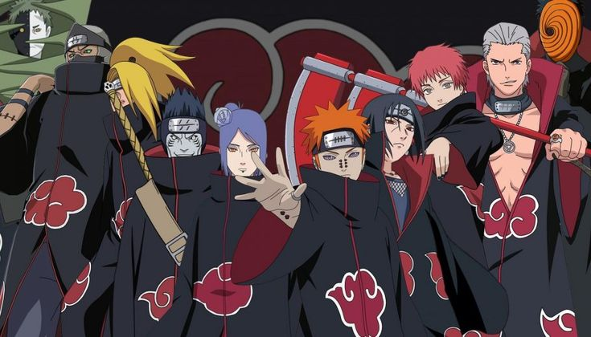

NARUTO UZUMAKI
A jornada de um ninja que nunca desistiu dos seus sonhos.
Sobre o anime

Naruto é um anime japonês criado por Masashi Kishimoto.
A história acompanha Naruto Uzumaki, um jovem ninja
da Vila Oculta da Folha que sonha em se tornar Hokage,
o líder de sua vila.
Durante sua jornada, Naruto enfrenta diversos desafios,
faz grandes amizades e conhece inimigos poderosos.
Mesmo sendo rejeitado por muitas pessoas, ele nunca
desiste de seus sonhos.
Personagens principais
Conheça alguns dos personagens mais importantes
da história:

Naruto Uzumaki
Um ninja alegre e determinado que deseja
se tornar Hokage.

Sasuke Uchiha
Um ninja habilidoso que busca poder
para alcançar seus objetivos.

Sakura Haruno
Uma ninja inteligente que desenvolve
grandes habilidades médicas.

Kakashi Hatake
O professor do Time 7, conhecido
como o Ninja Copiador.
A organização Akatsuki
A Akatsuki é uma organização formada por ninjas
extremamente poderosos. Seus integrantes são
conhecidos pelos mantos pretos com nuvens vermelhas.

Entre seus integrantes estão:
Obito Uchiha, Itachi Uchiha, Kisame, Zetsu, Kakuzu,
Pain, Konan, Sasori, Hidan e Deidara.
As cinco grandes vilas ninjas
O mundo de Naruto possui cinco grandes vilas,
cada uma com suas próprias características.
- Konohagakure - Vila Oculta da Folha.
- Sunagakure - Vila Oculta da Areia.
- Kirigakure - Vila Oculta da Névoa.
- Kumogakure - Vila Oculta da Nuvem.
- Iwagakure - Vila Oculta da Pedra.
Os clãs mais poderosos de Naruto
No universo de Naruto existem diversos clãs ninja,
cada um com suas próprias habilidades, histórias
e técnicas especiais.

Clã Uchiha
Um dos clãs mais conhecidos da Vila da Folha.
Seus integrantes possuem o Sharingan,
uma habilidade ocular muito poderosa.

Clã Hyuga
Conhecido pelo Byakugan, uma habilidade
que permite enxergar através de objetos
e perceber o fluxo de chakra.

Clã Uzumaki
O Clã Uzumaki é conhecido por sua grande
vitalidade, resistência e técnicas de selamento.

Clã Senju
Um dos clãs fundadores de Konoha,
conhecido por sua força e grande habilidade ninja.
Inimigos mais poderosos
Ao longo da história, Naruto enfrenta diversos
adversários perigosos. Alguns deles possuem
habilidades extraordinárias e grande poder.

Madara Uchiha
Um dos ninjas mais poderosos da história.
Possui habilidades extraordinárias e
um enorme domínio sobre o Sharingan.

Pain
Líder da Akatsuki, conhecido pelos poderes
do Rinnegan e pelas destruições que causou.

Orochimaru
Um dos lendários Sannin, conhecido por
seus experimentos e busca pela imortalidade.

Obito Uchiha
Um ninja que teve um papel importante
nos acontecimentos da Quarta Grande Guerra Ninja.
Quer conhecer mais sobre Naruto?
Se você deseja descobrir mais sobre os personagens,
clãs, técnicas, batalhas e histórias do universo ninja,
visite também este site:
Conheça mais sobre o universo de Naruto →
"Eu nunca volto atrás na minha palavra.
Esse é o meu jeito ninja!" - Naruto Uzumaki
Voltar para o início ↑